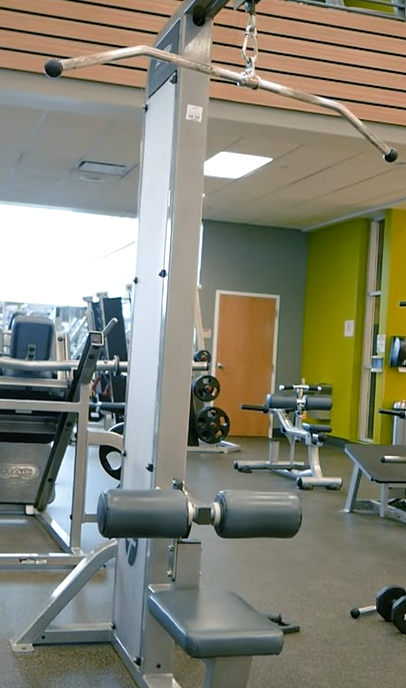
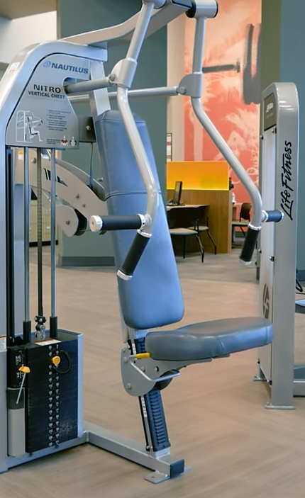
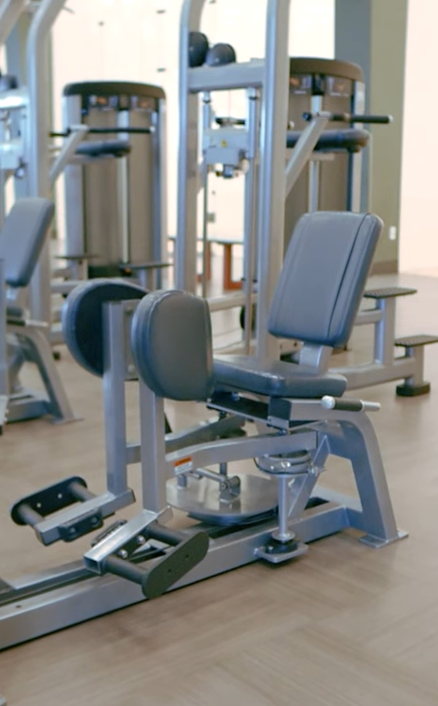

Seated Row works on your lats, focussing on the mid-back to engage the back of the shoulders, biceps and rhomboids. If you sit at a desk all day, this exercise can help to strengthen the postural muscles, building a stronger back and improving your posture
Lat Pulldown machine targets your ‘latissimus dorsi’ (or ‘lats’), one of the largest muscles in your back while also engaging your biceps and shoulders. Working your lats can help to improve posture and protect your spine during other exercises while sculpting and strengthening the muscles in your back
Chestpress mainly work on pectoralis major, anterior delts and tricepts. There are two adjustments which are one for the seat and one for the backrest. The seat will be adjusted like others by pulling the lever under the seat up and moving it up and down. The back of the chair can be moved forward of backwards by pulling the yellow lever on the left side of the chair to the left and moving the back of the chair
Hip Adductor has one point of adjustment which will change the width of the inner knee pads how far parts are close together you should have them just depend on your body. To adjust the knee pads, lift the lever on the right side of the machine up and move it forwards or backwards, the farther forwards you move it the closer together the pads will move and the farther backwards the lever goes the farther away the pads will move away from each other
How To Use Gym Equipment: A Beginner's Guide by https://www.sweat.com/
HOW TO USE GYM EQUIPMENT by Naomi Kong .